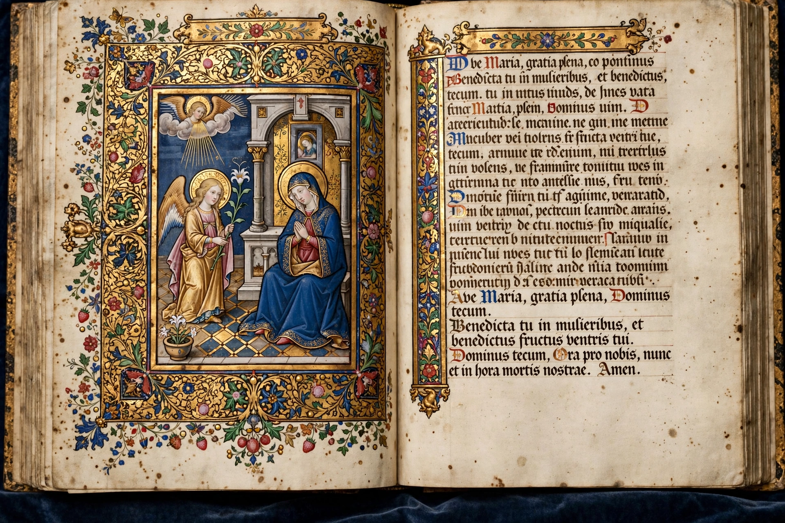

A book of hours is a Christian devotional book popular in the Middle Ages, containing prayers to be said at the canonical hours of the day, centred on the Hours of the Virgin. They are the most common type of surviving medieval illuminated manuscript.

Typical contents include a calendar of feasts, Gospel extracts, the Little Office of the Blessed Virgin Mary, psalms, litanies and the Office of the Dead, often richly decorated with miniatures of the Labours of the Months, zodiac signs and saints.
The Très Riches Heures du Duc de Berry (c. 1412–1416, Limbourg brothers) is the most famous. Books of hours were made for lay people, from modest to lavish royal commissions, and later printed.